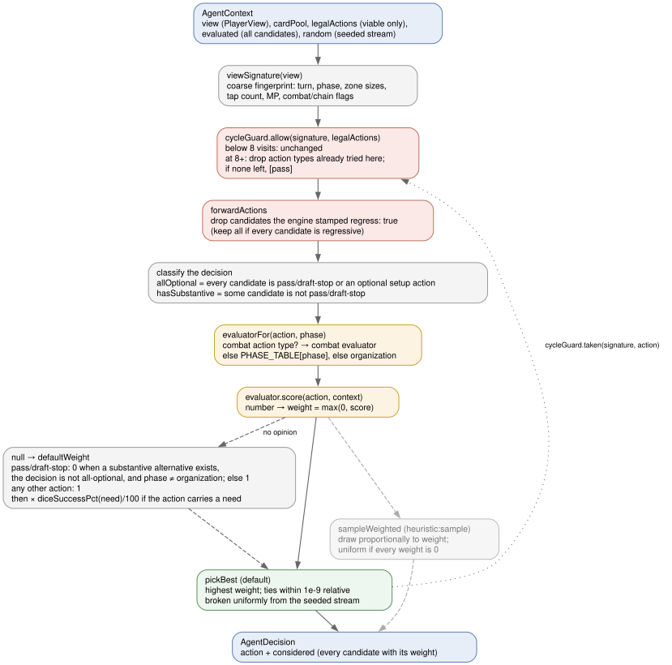
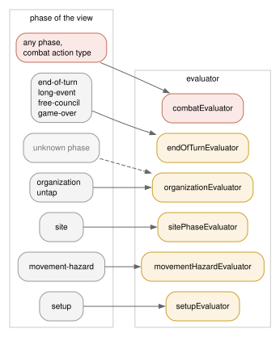

The rule-based MECCG player: vocabulary, dispatcher, every evaluator rule, shared valuations, safety nets, and how to read its decisions
Heuristics 1 (H1, registry name heuristic, lobby seat AI-Heuristic, historically the "Smart-AI") is a hand-written, one-ply, rule-based player. It has no lookahead, no model of the opponent, no learned parameters, and no memory beyond the current turn except a loop detector. At every decision it asks one evaluator, chosen by the current phase, to put a numeric weight on each legal action, and then plays the highest-weighted one.
It was written first (April 2026, specs/2026-04-06-ai-opponent-plan.md) as the text client's opponent and later moved into the simulation package so that self-play, gates, the trained policy's teacher, and the lobby all run the same code. It remains the reference bar every other agent is measured against: Heuristics 2 was built to remove its two structural defects (weights in incomparable units, and no explanation), the Monte-Carlo agent beats it, and the trained policy reaches roughly parity with it (see §17).
Three properties define its behaviour:
heuristic:sample for generating training data.self, opponent, phaseState, combat, chain, pendingEffects, legalActions and more.EvaluatedAction is { action, viable, reason? }. The engine offers every candidate it can construct; only viable ones may be chosen. The agent receives viable actions as legalActions and the full list as evaluated.type discriminant of a GameAction (plan-movement, play-hazard, pass, …). Evaluators switch on it.view, cardPool (definition id → card definition), legalActions, and an optional seeded random in [0, 1).phases (the phase names it handles) and score(action, context) → number | null. Six exist: setup, organization, movement-hazard, site-phase, combat, end-of-turn.null means "no opinion". Negative scores are clamped to 0 by the dispatcher.null: 1, or 0 for a pass that would idle a decision with real alternatives (§4).pass and draft-stop: the two action types that mean "do nothing here".place-character, add-character-to-deck, select-starting-site: setup actions a player may legitimately decline, so a pass alongside them is not suppressed.phases list (§4).effectiveStats (prowess, body, direct influence, corruption points) with items and attached effects already applied. H1 reads these, not the printed values, for characters in play.inverted / tapped / untapped. "Restore source" means a hand card or carried item whose effect can bring a character from one of those states back to untapped.heal-during-untap site rule.regress: true because it undoes progress made earlier in this organization phase (e.g. cancelling a just-planned movement). H1 drops these before scoring.explain, and used as soft targets when H1 is the teacher for the trained policy.heuristic, heuristic:sample, noisy-heuristic:0.25, route:…|bc:…|heuristic.
viewSignature(view) joins the quantities any real progress changes (§14).cycleGuard.allow returns the candidates unchanged unless this signature has already been decided at eight or more times in this game.forwardActions removes engine-flagged undo candidates.allOptional), and whether any candidate is substantive (hasSubstantive).score, and turn the result into a weight: max(0, score), or the default weight if the evaluator returned null.pickBest by default; sampleWeighted for heuristic:sample. If the weighted list is empty, the first legal action is taken with the note "no weighted actions — took first legal action".considered.ai/heuristic.ts holds the routing constants and the default-weight rule. Nothing here knows anything about cards.
| constant | value | role |
|---|---|---|
PASS_ACTIONS | pass, draft-stop | the "do nothing" types; suppressed by the default rule when alternatives exist |
OPTIONAL_ACTIONS | place-character, add-character-to-deck, select-starting-site | setup actions a pass may accompany without penalty |
PASS_OK_PHASES | organization | phase where an unscored pass keeps weight 1 regardless of alternatives |
COMBAT_ACTION_TYPES | assign-strike, choose-strike-order, resolve-strike, play-strike-event, support-strike, cancel-attack, cancel-by-tap, halve-strikes, body-check-roll, convert-creature-to-ally, tap-item-for-strike | always routed to the combat evaluator, whatever the phase |

| phase of the view | evaluator |
|---|---|
setup | setup |
organization, untap | organization |
movement-hazard | movement-hazard |
site | site-phase |
end-of-turn, long-event, free-council, game-over | end-of-turn |
| any other phase name | organization (fallback) |
When an evaluator returns null:
organization. Otherwise it gets 1.need, it is multiplied by diceSuccessPct(need) / 100, so an unscored roll with need 10 weighs 0.17 against an unscored alternative's 1.The consequence is that H1 never idles when it has been given nothing to say about a decision with substance: unscored substantive candidates tie at 1 and one of them is played. This is the rule that made H1 "eager": measured against recorded human games, its acting where a human passes was the single largest source of divergence (README, "the AI acts when humans do nothing").
Every roll in MECCG is 2d6 against a need. diceSuccessPct is the exact success probability, rounded to an integer percentage. Needs of 2 or less are 100; needs of 13 or more are 0.
| need | 2 | 3 | 4 | 5 | 6 | 7 | 8 | 9 | 10 | 11 | 12 |
|---|---|---|---|---|---|---|---|---|---|---|---|
| P(2d6 ≥ need), % | 100 | 97 | 92 | 83 | 72 | 58 | 42 | 28 | 17 | 8 | 3 |
The table is used in four places: the default-weight scaling above, influence rolls (÷5), strike-event and item-tap scoring (as is), and the marginal value of supporting a corruption check (difference between need and need − 1).
Phase setup: character draft, starting items, character-deck draft, starting site, company placement, shuffle, initiative. The draft priority formula is shared by three actions:
characterDraftScore = MP × 3 + prowess + body + DI × 2 (+ 50 if the character is an avatar)
| action | weight | notes |
|---|---|---|
draft-pick | max(1, characterDraftScore) | 1 when not in the character-draft step or the card is not a character |
draft-stop | 0 / 1 / 5 | 0 until at least 4 characters including an avatar are drafted; 1 at 4–5 with an avatar; 5 at 6 or more with an avatar |
assign-starting-item | max(1, target effective prowess + item prowessModifier − penalty) | penalty 50 if the item's non-hand modify-attack effect has a when gate the bearer's race/skills fail (dead weight); penalty 10 if its discardIfBearerNot race list excludes the bearer (Black Arrow on a non-Man) |
add-character-to-deck | max(1, characterDraftScore) | same formula over the remaining pool in the character-deck-draft step |
select-starting-site | 100 / 5 | 100 for a haven, 5 for anything else |
place-character | max(1, prowess + mind + MP) | printed stats; puts avatars and heavy hitters into the first company |
shuffle-play-deck, roll-initiative | 100 | always proceed |
| anything else | null | default weight |
Phases organization and untap: untapping, recruiting, company management, movement planning, permanent events. Two named constants: REBUILD_BONUS = 100 and Great Ship's definition id tw-248.
| action | weight | notes |
|---|---|---|
untap | 100 | |
play-character | base = max(1, MP × 5 + prowess + DI × 2 − penalty); +100 when no character is in play | headroom = 20 − generalInfluenceUsed − mind; penalty 50 if headroom < 0, 5 if headroom < 3, else 0. The rebuild bonus exists because a company-less player who passes forfeits every later phase: Anborn (0 MP, prowess 2) scored 2 against pass's 5 and the player passed for the rest of the game (h1-vs-h2 seed 32 stalemate) |
play-permanent-event | 30 | treated as free MP / utility |
play-short-event | 15 / 0 / null | only Great Ship is scored: 15 if the target company's current or destination site path contains a Coastal Sea region, 0 otherwise (its cancel only fires on coastal paths); every other short event is unscored |
plan-movement | base = scoreDestinationSite (§12), then adjusted | destination unknown → 1. Wounded company with no healing available: healing destination → max(base, 30) + 20 × wounded; other destination → max(1, ⌊base / 2⌋). Tapped character(s) with no untap source → max(1, ⌊base / 2⌋), because a tapped defender meets the destination's automatic attack at −1 |
cancel-movement | 1 | |
merge-companies | 8 / 2 | 8 when the source is a singleton and the target has at most 2 characters; otherwise 2 (bigger companies raise the hazard limit) |
split-company | 0 / 10 / 15 | 0 unless the company mixes wounded and healthy characters and has no in-company healing; then 15 if the character being moved out is wounded, 10 if healthy; 0 if nobody would stay behind |
discard-character | 0 | no model of when giving up a character pays; the flat default once discarded healthy characters at random |
move-to-company, move-to-influence | 2 | |
store-item | gain × 10, or 0 | gain = storeItemMpGain (§12); company-bound storables without a bearer are looked up in cardsInPlay |
transfer-item | 0 | never shuffles items |
activate-granted-action | 8, or 0 | extra-region-movement (Cram and the like): 0 if the character's company already has a legal plan-movement, 8 only when the discard is the difference between moving and not moving; every other granted action 8 |
pass | 0 / 0 / 5 | 0 if any offered movement reaches a site where a hand resource is directly playable (hasDirectlyPlayableMovement); 0 if a play-character is offered and nothing is in play; otherwise 5, which beats busy-work but loses to any good play (20+) |
| anything else | null |
Phase movement-hazard. Both seats decide here: the resource player selects companies, declares paths and draws; the hazard player plays creatures, events and corruption, and places on-guard cards.
The hazard-keying exposure a declared region-move path adds, summed over its regions with one table per alignment class. A hero (Wizard or Fallen-wizard) company is charged by how many creatures the pool keys to each type and how hard they hit; a minion (Ringwraith or Balrog) company sees the order reversed, because an attack keyed to a Dark-domain, or by a shadow race to a Shadow-land, is detainment against it (CoE §3.II.2.R1-2 / B1-2) while the Men, Elves and Maiar keyed to Free-domains and Border-lands attack it in earnest. Wilderness and Coastal Sea keyings are detainment for nobody, so those two weights are shared.
| region type | free-domain | border-land | coastal-sea | wilderness | shadow-land | dark-domain |
|---|---|---|---|---|---|---|
| hero danger | 0 | 1 | 1 | 2 | 4 | 5 |
| minion danger | 5 | 4 | 1 | 2 | 1 | 0 |
A second and a third region of the same type each cost again (a double Wilderness keys more creatures than a single, a triple more than a double), but no creature keys to more than three of one type, so the fourth and later copies cost nothing. A path entry that is not a region card counts 1.
creatureThreat(def, defenderProwess) = max(1, prowess × strikes − ⌊defenderProwess / 2⌋) defenderProwess = Σ effective prowess of the targeted opponent company creatureActionWeight = max(1, creatureThreat / keyingVariants)
Splitting by keying variants keeps a doubly-keyed Orc-warband from counting twice; the split total equals one decision's worth, the same idiom the on-guard rule uses. The loop detector that keeps the argmax from riding a costless card loop was wired into this agent on 2026-08-22 (§14).
| action | weight | notes |
|---|---|---|
draw-cards | 100 | always take every draw |
select-company | 10 | |
declare-path | 12 / 8 / (1 + pathDanger / 2) / 8 | 12 for starter movement (printed path); region movement decays from 8 with the declared path's danger for this seat's alignment, so safer routes win and needlessly long ones lose (bug report: Rivendell→Lórien via a gratuitous border-land) — the decay never floors, so two routes of different danger never tie; any other movement type 8 |
order-effects | 10 | |
play-hazard (creature) | creatureActionWeight, plus a lift for detainment | if the attack would be a detainment attack (§13), add normalCreatureCeiling: the best weight of any normal creature in hand against the same company. Detainment therefore always precedes wounding attacks, and stays ordered among detainment creatures |
play-hazard (corruption) | 8, or 8 + freeDi(target) | the bonus applies to Foolish Words (td-25) only: aim at the character with the most free DI so a corruption loss hurts most |
play-hazard (hazard event) | boosted + 1 / 6 / 5 + corruption / 5 | in priority order: (1) a board-wide attack boost that would strengthen a creature still in hand scores one above that creature's threat (Full of Froth and Rage before the spider); (2) an enabler another hand hazard's bonus is gated on ({ inPlay: name }, Doors of Night before An Unexpected Outpost) scores 6; (3) a corruption-keyword event with a character target scores 5 plus the target's effective corruption points (Alone and Unadvised on Théoden, not on a follower); (4) otherwise 5 |
play-hazard (other) | 3 | 1 if the card cannot be resolved |
play-short-event | 20 / 0 / null | only when the action names a discardTargetInstanceId (Marvels Told): 20 if discarding that card helps the viewing player, 0 if it would un-hinder the opponent (discardBenefitsSelf, §12) |
support-corruption-check | max(1, pct(need − 1) − pct(need)); 0 if the check cannot fail; 3 if no paired roll is found | each tap is worth exactly the probability it adds; stops the AI tapping three company mates into a check one support already made unfailable |
place-on-guard | 4 / guardOptions | one action per hand card, so the fixed total 4 is split across them: a ten-card hand does not out-vote pass ten times over |
pass | 0 / 1 | 0 while draw-cards is on offer; else 1 |
| anything else | null |
Phase site: entering sites, playing items, factions, allies and events, influence attempts, minor items, on-guard reveals.
enter-site scores 50 unless one of three gates zeroes it. All three exist because entering exposes the company to on-guard cards and automatic attacks, so it must pay:
bestPlayableMp is the highest MP among hand cards playable at the current site (resourcePlayableAt, §12). If no card is playable, 0.handHasNoTapPlayableAt), 0.bestPlayableMp ≤ 1 and automaticAttackForcesTap, 0.automaticAttackForcesTap: bestProwess = max effective prowess in the company bestUntappedProwess = bestProwess − 3 (CoE 3.iv.3: staying untapped costs −3) forces a tap ⇔ some automatic attack has attack.prowess − bestUntappedProwess + 1 ≥ 8
The 8 is the same threshold the combat evaluator uses to prefer tapping (§10). The bug report behind it: Théoden's company entered Glittering Caves against a 9-prowess automatic attack, Fatty Bolger was wounded, and the 1-MP item was never played.
If the company has no current site, or the site definition cannot be resolved, the score is 50.
| action | weight | notes |
|---|---|---|
enter-site | 50, or 0 by the gates above | |
play-hero-resource | max(1, MP × 10 + adjustments) | item: + prowessModifier × 2 − corruptionPoints × 3, and −10 when attaching to one of our own characters for whom the item's capped stat bonus is already maxed (Hauberk of Bright Mail on a body-9 Glorfindel); faction: +5; ally: +5. Despite the name, this action type carries minion items and allies too |
play-short-event | 0 / null | A Malady Without Healing (malady-without-healing orchestrator) targeting our own character scores 0; everything else unscored |
play-minor-item | max(1, MP × 5 + prowessModifier) | 5 if the card is not an item |
influence-attempt, faction-influence-roll | max(1, diceSuccessPct(need) / 5) | a need of 7 scores 11.6, a need of 10 scores 3.4 |
opponent-influence-attempt | 6 | |
opponent-influence-defend | 100 | |
reveal-on-guard | 20 | |
declare-agent-attack | 8 | |
place-on-guard | 4 | not split here, unlike the movement-hazard phase |
pass | 1 | |
| anything else | null |
Reached for the eleven combat action types in any phase. The strategy: absorb strikes with strong characters when defending and aim leftover strikes at weak ones when attacking; tap to fight when the need is hard; never Dodge on a character who is already wounded or tapped; support a struggling defender; always roll body checks; convert a creature to an ally rather than fight it.
| action | weight | notes |
|---|---|---|
assign-strike | own character: max(1, prowess + 5); opponent's character: max(1, 25 − prowess) | the engine also asks the attacker to assign leftover strikes among the defender's characters, so the scale inverts for opponent targets; 1 if the character is not found |
choose-strike-order | max(1, prowess + 3), else 5 | resolve strong strikes first |
resolve-strike | 20 / 8 / 5 / 1 | if a company mate has already resolved its strike and is still untapped, tapping scores 20 and staying untapped 1 (the untapped member requirement is already met). Otherwise: tap with need ≥ 8 → 20; stay untapped with need ≤ 7 → 20; any other tap → 5; any other untapped → 8 |
tap-item-for-strike | max(1, diceSuccessPct(need)) | tapping an item costs no character tap and only improves the need, so it outscores the fixed 5/8/20 of resolve-strike whenever the boost helps (Shield of Iron-bound Ash fix, 2026-08-19) |
play-strike-event | 0 / 30 / max(1, diceSuccessPct(need)) | a Dodge-style effect (strike-modifier with dodge) on a struck character who is already wounded or tapped → 0 (only the body penalty is left); a cancelling effect → 30; anything else scores its resulting success chance |
support-strike | 6 / 1 | 6 when the supporter is our own character in play, else 1 |
cancel-attack | 12 | |
convert-creature-to-ally | 25 | cancels the attack and gains an ally (Ready to His Will); must beat the live-attack alternatives |
halve-strikes | 8 | |
cancel-by-tap | 6 | |
body-check-roll | 100 | |
| anything else | null |
Phases end-of-turn, long-event, free-council, game-over: drawing back to hand size, discarding, calling the Free Council, deck exhaustion, sideboard exchange.
| action | weight | notes |
|---|---|---|
draw-cards | 100 | |
discard-card | 8 / 6 / 3 | a character with mind ≥ 6 → 8 (unaffordable); a hazard creature, hazard event or hazard corruption → 6; anything else 3; unknown card 1. Higher means "drop first" |
call-free-council | 1 000 000 or 0 | a probabilistic gate, see below |
store-item | gain × 10, or 0 | as in the organization phase |
deck-exhaust, finished | 100 | |
pass | 0 / 1 | 0 while a draw is on offer |
| anything else | null |
Both marshalling-point totals are public, so the tournament scores are computed from the view and the lead is selfScore − oppScore. The lead is turned into a probability, one random draw decides, and the weight is either huge or zero so that pass wins whenever the roll says "not yet":
| lead | ≤ 0 | 1–4 | 5–19 | ≥ 20 |
|---|---|---|---|---|
| P(call) | 0 | 0.05 | 0.05 + (lead − 4) × 0.95 / 16 (linear, 0.11 at 5 up to 0.94 at 19) | 1.0 |
This is the only place an evaluator consumes randomness, and it takes it from context.random so the choice is reproducible under a seed.
ai/evaluators/common.ts holds the lookups and valuations more than one evaluator needs. They are listed with their exact rules because most H1 behaviour that looks like judgement is one of these.
The movement-planning score for a destination. Non-negative integer; 0 means "do not move here".
playableScore = Σ over hand cards playable at site of max(10, MP × 20)
siteDanger = SITE_DANGER[site.siteType] (unknown type → 2; 0 for a minion seat at a shadow-hold or dark-hold, unless the site's text makes its attacks normal)
regionDanger = Σ over the site's printed sitePath of REGION_DANGER[region] (unknown → 1)
draws = site.resourceDraws
if playableScore = 0:
havenStaging = 15 if site is a haven and some hand card is playable at some site still in our site deck, else 0
drawOnly = max(0, draws × 5 − siteDanger − regionDanger)
return max(havenStaging, drawOnly)
else:
return max(0, playableScore + draws × 2 − siteDanger − regionDanger)
| REGION_DANGER | free-domain | border | wilderness | shadow-land | dark-domain |
|---|---|---|---|---|---|
| danger | 0 | 1 | 2 | 4 | 5 |
| SITE_DANGER | haven | free-hold | border-hold | ruins-and-lairs | shadow-hold | dark-hold |
|---|---|---|---|---|---|---|
| hero danger | 0 | 1 | 1 | 3 | 5 | 7 |
| minion danger | 0 | 1 | 1 | 3 | 0 (5) | 0 (7) |
A haven is the one site nothing can be keyed to and a company may heal at, so a free-hold sits one above it. For a minion (Ringwraith or Balrog) seat an automatic-attack at a Shadow-hold or Dark-hold is detainment (CoE §3.II.2.R1/B1) and taps rather than wounds, so those two cost nothing — unless the site's own text makes its attacks normal, encoded as a site-rule of attacks-not-detainment (Moria, Goblin-gate, Dead Marshes and the like), in which case the hero weight in parentheses applies. A Fallen-wizard company is a hero company for detainment.
Coefficients were chosen against the organization pass weight of 5: a single 2-MP item (40) clearly dominates it, a 0-MP minor item still contributes 10, and a two-card draw at a safe site (10) beats sitting still while a dangerous site's penalty wins out. The draw-only branch exists because a hand of combat-only events once left every destination at 0 and the AI camped at Rivendell for three turns. Note that REGION_DANGER here (used for a site's printed path) is the hero-side table of the movement-hazard evaluator's declared-path danger (§8), but with no minion counterpart and no cap on repeated regions.
Whether a hand resource can be played at a site. It errs on "not playable", which costs a candidate destination but never a wasted trip.
item-play-site effect, that decides: the site's name must be listed, or the effect's filter must match the site. Otherwise the site's printed playableResources must include the item's subtype (minor / major / greater …). The item's own playableAt is deliberately not consulted, because the engine does not consult it either (Scroll of Isildur at Isle of the Ulond).siteMatchesEntry over the card's playableAt entries, so when gates hold (War-wolf only at Ruins & Lairs with a Wolf automatic attack). The site's region type is the last leg of its printed site path.play-target: site filter are playable where the filter matches.anyCardPlayableAt applies this over the hand; handHasPlayableSiteInDeck applies it over every site in the player's site deck; hasDirectlyPlayableMovement applies it to the destination of every offered plan-movement.
A restore option on a card's effects is either an effect (possibly wrapped in play-option / grant-action) whose apply is set-character-status → untapped and whose when does not require a different target.status / bearer.status than the one being restored, or a grant-action → heal-company-character (heals wounded only). Halfling Strength's untap option is gated on tapped and its heal option on inverted; only the matching one counts.
characterHasRestoreSource: a carried item with a matching option, or a hand card with a matching option whose character play-target filter accepts this character (a hobbit-only card is no help to a Man).hasHealingAvailable: every wounded character in the company has a restore source (a card that heals one of three wounded does not cancel the haven trip).hasUntapSource: at least one tapped character has a restore source.isHealingSite: a haven, or a site with the heal-during-untap site rule.True if the hand holds a permanent resource event that can be played at the site without tapping a character: not character-targeted (those bind an untapped character like an item), respecting tapped-site-only and untapped-site-required play flags, and passing any play-target: site filter. The flags matter: Rescue Prisoners is playable only at an already-tapped Dark-hold or Shadow-hold, and ignoring that sent a fully tapped company into Mount Gundabad's Orc attack for nothing.
| helper | rule |
|---|---|
mpValue(def) | printed marshallingPoints, else 0 |
freeDi(view, pool, char) | effective DI − Σ mind of the character's followers |
storeItemMpGain(pool, itemDefId) | no storable-at effect → −MP (stored items earn nothing); with the effect → (override MP ?? MP) − MP. Positive only when storing scores more than carrying |
discardBenefitsSelf(view, instanceId) | a hazard attached to one of our characters → true; attached to an opponent's → false; in our own cardsInPlay → false; in the opponent's → true; not found → true |
boostsCreatureAttack(event, creature) | the event has a stat-modifier with target: all-attacks on prowess or strikes whose when (if any) matches { enemy: { race } } |
enablesHandCardBonus(event, view, pool) | some other hand card has an effect gated when.inPlay === event.name |
itemStatBenefitWasted(item, target, targetDef) | the item has a body/prowess stat-modifier with a numeric max, its when (if any) accepts the bearer's skills, and the target's effective stat is already at or above that max; non-numeric maxima are treated as not wasted |
strikeModifierEffect(def) | the card's strike-modifier effect, if any (Dodge, Risky Blow, cancels) |
findSiteDef, defOfInstance, findCharacterInPlay, findCompanyOf | instance-to-definition lookups over the site deck, companies, hand, characters, items, allies, hazards and permanents of both sides; all return undefined/null rather than throwing |
The defending seat can read combat.detainment off the live combat. The attacking seat has no combat yet: it is choosing which creature to play. ai/detainment.ts therefore rebuilds the engine's own inputs from the view and calls the engine's isDetainmentAttack (CoE §3.II), so a card that changes the rule changes both seats at once. It is not a second model.
keyedTo; the names of every card in play on either side (for when clauses on keying entries such as Doors of Night alternatives); the opponent's alignment; and the defending site, which is the company's revealed destination while it is moving, else where it stands (the engine's resolveDefendingSiteDef).keyedBy (site type or region type) is passed rather than the union; without one, the engine's own union fallback applies.wh-1) above 7 stage points converting every detainment attack to normal, and a company's turn-scoped keyed-attacks-normal constraint (World Gnawed by the Nameless, as-110). Against those boards the prediction under-states the attack.engine/reverse-actions.ts computes, for every action taken during the organization phase, the action that would undo it, and stamps regress: true on any later candidate that matches. H1 has filtered on this flag from the start; an agent that ignores it will split a company, merge it back, and split again forever, which is exactly what Heuristics 2 and the Monte-Carlo agent did before they adopted the same filter. forwardActions returns the original list only when every candidate is regressive, so the agent is never handed an empty decision.
Even with regressions removed, a deterministic argmax over static weights can walk a legal no-op loop: with the Demon fána swap, Great Shadow's (ba-62) free return-to-hand scored 8 against pass's 5 and replaying it scored 30, and heuristic self-play burned the full 25 000-decision budget inside one organization phase (0 of 10 Balrog/Fallen-wizard games finished). The guard is the one Heuristics 2 carries, reset at startGame:
DEFAULT_VISITS_BEFORE_GUARDING), nothing changes; a decision with one candidate is never narrowed.pass alone is offered (it ends the phase, so the position cannot recur); if the engine does not offer pass, the full list is returned.The threshold is above the longest legitimate run of same-signature decisions, because a long attack can assign several strikes without moving any watched quantity. The guard only ever narrows, it terminates (finitely many types, then pass), and it is not a fix: a model that scores a move and its undo as both profitable is wrong about the position, and the guard merely converts the hang into a finished game.
The evaluators were written to rank candidates. Read as a distribution, a move scored half as good was played about a third of the time. Over 6 games and 10 341 decisions, sampling chose from outside its own top-weighted set on 26.4% of the 5 085 contested decisions, at a mean weight of 0.858× the best available. Ten paired, side-swapped gates of 400 games each, argmax against sampling:
| seed block | 1 | 500 | 1000 | 1500 | 2000 | 2500 | 3000 | 3500 | 4000 | 4500 | pooled (3 997 games) |
|---|---|---|---|---|---|---|---|---|---|---|---|
| score | 59.5% | 54.4% | 51.9% | 55.0% | 54.3% | 56.9% | 60.0% | 59.0% | 62.2% | 54.9% | 56.8% |
| paired Elo | +67 | +30 | +14 | +35 | +30 | +49 | +70 | +63 | +86 | +34 | +47 [+37, +58] |
All ten blocks favour the argmax; a single 400-game block carries a ±30 interval, which is why five of them fail a strict gate on their own.
The decision's considered list carries every candidate with its weight. H1 publishes no weightUnit, which the explainer renders as "weights are relative preference — the ordering is meaningful, the differences are not". Only the Monte-Carlo agent publishes a quantity (tournament-score differential). Consumers that subtract H1 weights are misreading them.
npm run explain -w @meccg/sim -- --game <id> --seq <n> --player <p> --agent heuristic projects the logged state to the player's view (never reading the omniscient state, so the same renderer can answer the browser's "Ask AI" panel without leaking information) and prints the sections below. The layout is the renderer's; the values are illustrative.
ASK AI — heuristic
Agent: heuristic
Seat: Alice (p1) — turn 7, organization
Score: Alice 12 MP / Bob 9 MP, hand 6, opponent hand 5
Choices: 9 viable of 11 candidates (1 regressive, dropped)
Asked: plan-movement ×5, move-to-company ×2, pass, store-item
Position: game abc123#412
PICK Move Aragorn's company to Rivendell
RANKING 9 candidates — weights are relative preference — the ordering is meaningful, the differences are not
→ 1. 44.000 Move Aragorn's company to Rivendell
2. 30.000 Move Aragorn's company to Bree
3. 5.000 Pass (end your actions this phase)
…
GAP 14.000 between the pick and "Move Aragorn's company to Bree" in preference
NOT AVAILABLE 2 candidates the engine refused:
Play Gimli — mind 6 would exceed limit
…
ACTUALLY PLAYED (when explaining a recorded move: agreement verdict)
REPRODUCE (the command line that regenerates this explanation)
The same renderer produces the per-decision lines in the lobby AI client's log, so a ranking read in the browser and one read in the log are identical.
| spec | agent | behaviour |
|---|---|---|
heuristic | heuristic | argmax with random tie-break; the default AI opponent in the lobby (AI-Heuristic) and the default champion in gate |
heuristic:greedy | heuristic | accepted no-op alias so older gate logs still run |
heuristic:sample | heuristic:sample | samples the weights; the default teacher of export-training and fit-winprob, because an argmax teacher walks one trajectory per seed and the student needs the states either side of it |
noisy-heuristic:ε | noisy-heuristic:ε | with probability ε (default 0.5, must be in [0, 1]) picks a uniformly random legal action, otherwise plays heuristic. Exists to calibrate the Elo ladder and to prove the gate blocks a weaker agent (ε = 0.75 scored 14.4%, −310 Elo, and was blocked) |
route:<types>|<primary>|<secondary> | route | hands any decision that offers one of the named action types to the secondary agent; the trained policy's shipped hybrid routes plan-movement and discard-card to heuristic (see real-ai.pdf) |
Other places H1 appears:
ai-client without --model or --agent, which resolves heuristic from the same registry the sim uses, so the lobby cannot drift from self-play (the client once had its own sampleWeighted call and did).approved-base-0727 is a clone of 2.2 million decisions of heuristic:sample self-play; H1's weighted candidate list is what makes soft targets possible.route.to may name heuristic and nothing else.mc delegates views it cannot determinize (in combat, mid-chain, pending effects) to a fallback agent, by default H1.| measurement | result | when / where |
|---|---|---|
| heuristic vs random, 50 games | 38–10 (79%) | P1 gate, 2026-07-22 |
| Elo ladder rating (random / noisy / heuristic) | heuristic 1795 ± 181 and 1841 ± 181 across two seed sets | P2, 2026-07-23 |
| argmax vs sampling | +47 Elo [+37, +58], 3 997 games | PR #2442, 2026-08-17 |
| Heuristics 2 vs H1, tree verified | H2 56.6%, +46 [+14, +80] (seed 1); 53.8%, +26 [−5, +58] (seed 500) | master v0.109.0, 2026-08-16 |
| flat Monte-Carlo vs H1, 60-game gates | 8 rollouts 70.6%, +152 [+59, +273]; 16 rollouts 88.4%, +352 [+228, +672] | 2026-07-28, decks a/b |
| trained policy vs H1 | base clone +80 [+32, +130] over 200 games (2026-07-27); an honest 288-game round-robin the day before put every model within noise of H1 | see real-ai.pdf |
| human-cloned hybrid vs H1 | 53.1%, +23 [−20, +68], 240 games (parity) | 2026-08-14 |
| recorded human games vs any AI seat | humans 107–0 across 21 players, median 42 MP to the AI's 2 | lobby corpus, README |
null ties at the default weight with its siblings and is chosen at random among them; several of the rules above (Marvels Told targets, Alone and Unadvised targets, Malady on own characters, support taps) are bug reports about exactly that.discard-character and transfer-item are never played; split-company only for the heal-split.resourcePlayableAt ignores in-state unlocks (Double-dealing wh-66, wizardhaven conversion wh-97), so some legal destinations score 0.keyed-attacks-normal constraints (§13).| file | contents |
|---|---|
packages/sim/src/agents/heuristic-agent.ts | createHeuristicAgent({ sample }): cycle guard, argmax/sample, considered list |
packages/sim/src/agents/noisy-heuristic-agent.ts | ε-blundering wrapper |
packages/sim/src/agents/route-agent.ts | type-routed composition of two agents |
packages/sim/src/ai/heuristic.ts | dispatcher: phase table, combat routing, default weight |
packages/sim/src/ai/strategy.ts | AiStrategy, AiContext, WeightedAction, pickBest, sampleWeighted |
packages/sim/src/ai/regress.ts | isRegressive, forwardActions |
packages/sim/src/ai/detainment.ts | attackIsDetainment |
packages/sim/src/ai/evaluators/{setup,organization,movement-hazard,site-phase,combat,end-of-turn}.ts | the six evaluators |
packages/sim/src/ai/evaluators/common.ts | shared valuations and lookups |
packages/sim/src/ai/evaluators/types.ts | ActionEvaluator interface |
packages/sim/src/ai/explain-decision.ts | the explanation renderer used by explain, the AI client log, and Ask AI |
packages/sim/src/cycle-guard.ts, state-signature.ts | loop detection |
packages/sim/src/cli/common.ts | resolveAgent: the spec grammar |
packages/text-client/src/ai-client.ts | the lobby's headless AI player, which resolves heuristic from the registry |
packages/sim/src/ai/evaluators/*.test.ts, heuristic-agent.test.ts, detainment.test.ts | the rules' regression tests |
| name | value | where |
|---|---|---|
TIE_TOLERANCE | 1e-9 (relative) | strategy.ts, pickBest |
DEFAULT_VISITS_BEFORE_GUARDING | 8 | cycle-guard.ts |
REBUILD_BONUS | 100 | organization.ts |
GREAT_SHIP_ID | tw-248 | organization.ts |
GI budget in play-character | 20 | organization.ts |
organization pass | 5 | organization.ts |
HERO_REGION_PATH_DANGER | free 0, border 1, coastal 1, wilderness 2, shadow 4, dark 5 | movement-hazard.ts |
MINION_REGION_PATH_DANGER | free 5, border 4, coastal 1, wilderness 2, shadow 1, dark 0 | movement-hazard.ts |
MAX_SAME_REGION_KEYING | 3 | movement-hazard.ts |
| on-guard total (movement-hazard) | 4, split across options | movement-hazard.ts |
| Foolish Words id | td-25 | movement-hazard.ts |
| hard-need threshold | 8 | combat.ts, site-phase.ts |
| untapped-defender penalty | 3 | site-phase.ts (automaticAttackForcesTap) |
| free-council curve | 0 / 0.05 / linear to 1.0 between leads 4 and 20 | end-of-turn.ts |
| discard-first mind threshold | 6 | end-of-turn.ts |
REGION_DANGER | free-domain 0, border 1, wilderness 2, shadow-land 4, dark-domain 5 | common.ts |
SITE_DANGER | haven 0, free-hold 1, border-hold 1, ruins-and-lairs 3, shadow-hold 5, dark-hold 7; minion seats pay 0 at a shadow-hold/dark-hold unless its attacks are normal | common.ts |
| destination coefficients | playable max(10, MP × 20); draws ×2 (with plays) or ×5 (draw-only); haven staging 15 | common.ts |
| dice table | §5 | common.ts |